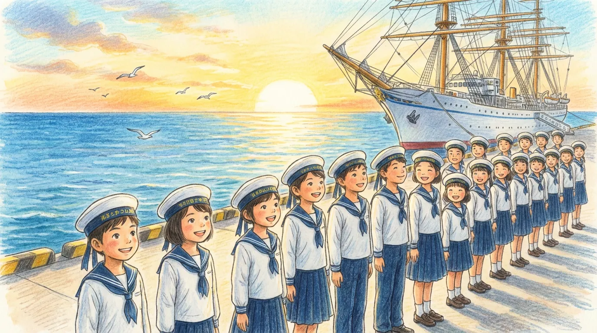
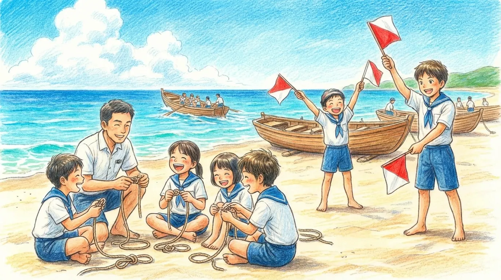
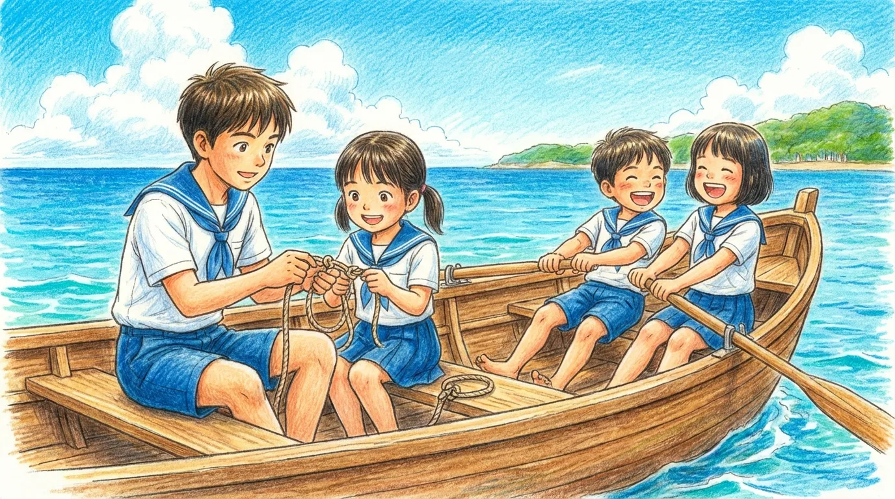
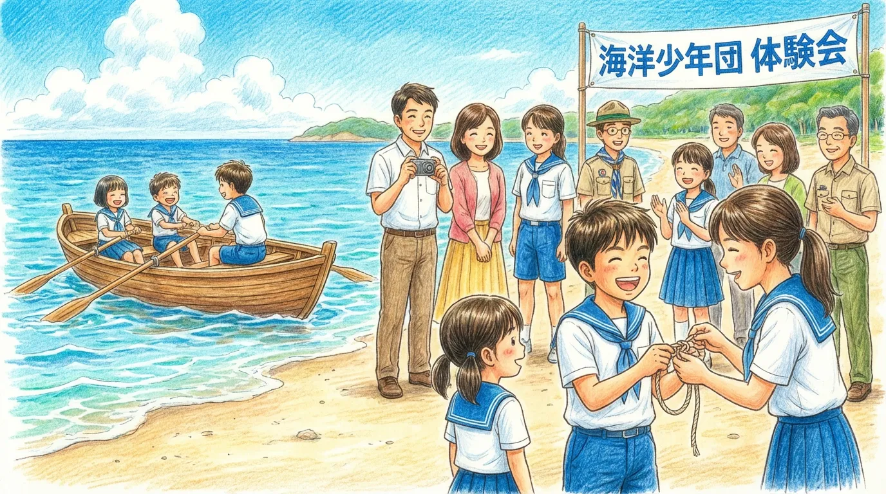
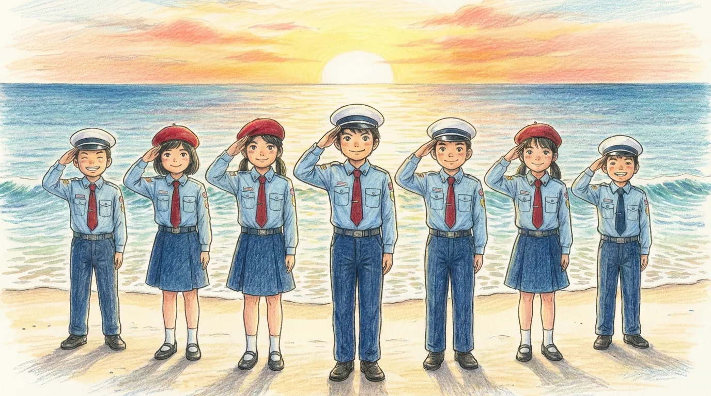

「海洋少年団ってどんなことするの？」「ボーイスカウトと何が違うの？」って思いますよね。海洋少年団は、海をフィールドに、子どもたちが一生使えるスキルと自立心を育む団体です。
カッター訓練やロープワークなど、海ならではの体験を通して、子どもたちは自然と規律とチームワークを身につけます。この記事では、活動内容、費用などを、親目線で詳しく解説します。
筆者が子どものときは「ボーイスカウト」に所属し、さまざまな体験をしてきましたが、調べていくと、わが娘にはぜひ「海洋少年団」に入ってほしいと考えるようになりました。
お子さんの「生きる力」を伸ばす習い事を探している方は、ぜひ最後まで読んでみてください。
海洋少年団って？海で「心と体」を育てる場所
海洋少年団は、海での活動に特化していて、手旗信号やボート操縦などのプログラムを通して、社会で必要な力を育てます。
海洋少年団の心の柱「4つのちかい」
海洋少年団では、技術を身につけることよりも、人間として成長することを大切にしています。その基本となるのが、次の「4つのちかい」です。
- しつけ：礼儀を大切にし、みんなで決めたルールを守る
- 奉仕：人のために自分にできることを考え、行動する
- 責任：最後まで自分の役割を果たす
- 愛護：自然や命を大切にする
これらのことを普段の活動で実践することで、きちんと礼儀正しく、優しい大人へと成長していきます。
ボーイスカウトとの違いは？
よく比べられるボーイスカウトとの大きな違いは、活動場所が「山」か「海」かということです。ボーイスカウトはキャンプや登山が中心ですが、海洋少年団はカッターボートの操船やロープワークなど、海に関するスキルを学びます。
水兵さんのようなかっこいい制服に憧れて入団する子も多いんです。海という厳しい自然の中で育まれる、「命を守るためのルール」を守ることが、海洋少年団の魅力です。
海洋少年団ではどんなことをするの？
海洋少年団では、海で生きる知恵を学ぶ「技術訓練」と、仲間との絆を深める「レクリエーション」を中心に活動します。この2つをバランスよく行うことで、楽しみながら自立心や集中力を育てています。
海に強くなる「技術訓練」
海での安全を守り、状況をしっかり把握するためのスキルを身につけることが大切です。たとえば、遠くの仲間と連絡を取り合う「手旗信号」、普段の生活でも役立つ「ロープワーク」、みんなで協力する「カッター（手漕ぎボート）」の操船訓練などを行います。
これらの訓練は、ただ技術を覚えるだけではありません。一つ一つの作業をきちんと行うことで、子どもたちの集中力がアップします。また、学んだことは災害時の「防災知識」にもつながるので、一生役に立つ知識となるでしょう。
仲間と楽しむ「野外・レクリエーション」
厳しい訓練ばかりではなく、子どもたちが楽しめるイベントもたくさんあります。夏休みにはサマーキャンプやカヌー体験、水泳訓練などがあり、全国の団員が集まるスポーツ大会も開催されます。
こうしたイベントでは、学校や地域をこえた仲間とのつながりが自然と生まれます。年上の子が年下の子の面倒を見たり、年下の子がリーダーを見て学んだりすることで、相手を思いやる気持ちや協力する心が育まれます。
海洋少年団をおすすめする3つの理由
海洋少年団での活動は、学校では学べない「生きる力」を育むチャンスです。たくさんの団体がある中で、海洋少年団が選ばれている理由を3つご紹介します。
1. 一生使える技術と防災の知識が身につく
水辺での安全を守る知識は、子どもの命を守る力になります。ロープワークや水難救助の基本などは、普段の生活やアウトドア、災害時にも役立ちます。
海洋少年団には進級制度もあります。目標を立てて努力し、成長が目に見える形になるので、子どもたちのやる気につながるでしょう。
2. いろんな年齢の仲間と交流して、リーダーシップが育つ
学校と違い、団によっては年長さんから高校生までが一緒に活動するので、社会性が身につきます。この年齢の違う仲間とのつながりが、海洋少年団の魅力です。
- 年上の子: 年下の子の面倒を見ることで、責任感や教えることを学びます。
- 年下の子: 先輩をお手本にして、どう行動すればいいかを学びます。
この交流を通して、相手を思いやる気持ちや、みんなをまとめる力が自然と育っていきます。
3. 費用があまりかからず続けやすい
多くの親御さんがメリットとしてあげるのが、費用があまりかからないことです。地域の方がボランティアで支えているため、他の習い事に比べて月謝が安くすみます。たとえば東京都港区では、月1,000円＋制服などの費用が20,000円くらいです（https://ws.formzu.net/fgen/S373340795/）。費用があまりかからないので、兄弟で入団しやすく、長く続けやすい環境ですね。
親の出番も、今の時代に合わせて無理のない範囲で協力し合うようになっています。指導員が子どもたちをしっかり教えてくれるので、親は安心して任せられます。
入団するには？まずは近くの団を探そう
海洋少年団に入るには、まず近くの団を探して、どんな雰囲気か見てみましょう。お子さんに合うかどうかを確認しながら、手続きを進めるための3つのステップをご紹介します。
1. 近くの海洋少年団を探す
まずは、家から通える範囲で活動している団を探しましょう。日本海洋少年団連盟の公式サイトに、全国の団のリストが載っています（https://www.jsf-japan.or.jp/pages/33/）。
活動場所や活動日は団によって違うので、まずは近くの団のスケジュールを確認してください。海沿いの地域だけでなく、川や湖の近く、都会で活動している団もあります。
2. 見学・体験に申し込む
気になる団が見つかったら、公式サイトのフォームや電話で見学・体験を申し込みましょう。ほとんどの団で、無料で体験できる機会があります。
見学に行くときは、動きやすい服装と帽子、飲み物を用意しましょう。活動の様子を見ることで、指導員との相性や団の雰囲気がお子さんに合っているか確認できます。
3. 納得してから入団
体験が終わって、お子さんが入りたそうだったら、詳しいルールや費用について説明を受けましょう。無理やり入団させられることはないので、納得できるまで質問してください。
活動内容や親の協力について確認し、無理なく続けられそうだったら、入団の手続きをします。新しい制服に袖を通す日は、お子さんにとって特別な日になるでしょう。
まとめ：海洋少年団で自信をつけよう
海洋少年団は、海での活動を通して「自立心」と「社会性」を育てる最高の場所です。スキルを身につけるだけでなく、仲間と協力して困難を乗り越える経験は、お子さんの将来にとって大切な宝物になるでしょう。
海洋少年団が選ばれる理由
費用があまりかからず、地域全体で子どもたちを見守る温かいコミュニティがあるのは、親御さんにとって安心できるポイントです。きちんとした活動で身につく礼儀や、相手を思いやる気持ちは、これからの社会で生きていく上で大切な力になります。
まずは体験してみませんか？
今しかできない貴重な体験は、お子さんの可能性を広げてくれます。少しでも興味がある方は、日本海洋少年団連盟の公式サイトから近くの団を探して、見学・体験会に申し込んでみてください。
海での新しい出会いが、家族の新しい物語の始まりになるかもしれません。
【関連情報・参考リンク】
- 日本海洋少年団連盟 公式サイト
https://www.jsf-japan.or.jp/ - 全国の海洋少年団リスト
https://www.jsf-japan.or.jp/pages/33/ - 東京都港区 海洋少年団 入団案内
https://ws.formzu.net/fgen/S373340795/